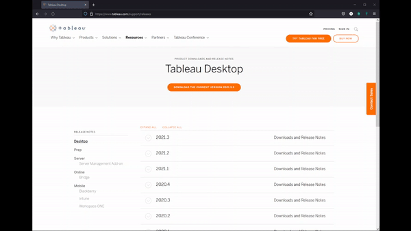
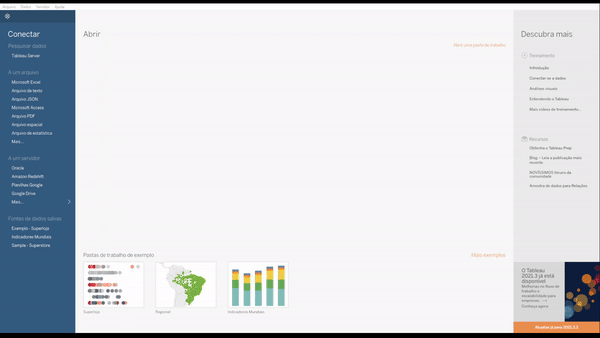
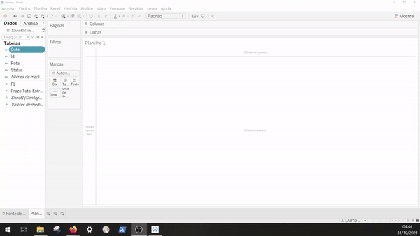

Caso tenha perdido a parte 1, recomendamos que você dê uma olhadinha lá: Parte 1
Nessa segunda parte do guia de uso do Tableau vamos falar sobre configurações básicas de uso da ferramenta. Iniciamos a parte 1 falando sobre o que faz uma ferramenta de BI e o Tableau, agora vamos avançar para colocar um pouco mais a mão na massa!
Criar sua Conta
Siga para o site do Tableau, e continue os passos abaixo:
-
Clique no botão Try Now ou Try Tableau for Free
- Preencha o formulário de cadastro, após isso você receberá um e-mail com os próximos passos
- Siga os passos do Email
- Preencha as informações posteriores
-
Faça o Download do tableau desktop
 - Faça o login no Tableau Desktop para começar a usar-lo
Configurações Iniciais
Agora que já baixamos o Tableau, vamos seguir para configurar uma fonte de dados! Para esse guia usaremos a base presente nesse repositório. Existem duas formas de conectar a ela, a primeira é baixando o arquivo de forma local e a segunda é por via de um google drive (google sheets). Os processos serão similares, mas para conexão no sheets precisa upar o arquivo em um drive pessoal.
- Faça o download da Planilha
-
Após fazer o download, clique no canto esquerdo em Conectar > De um Arquivo e selecione o arquivo baixado

O Tableau possui três tipos de estruturas básicas para construção de um Dash, planilhas, painéis e histórias: - Planilhas são o local onde são construídos os gráficos, legendas e filtros. Lá também é possível criar campos calculados a partir das colunas existentes na base de dados. - Painéis são um agrupado de planilhas, e demais informações em uma visão single page report. Uma pasta pode ter vários painéis, mas cada painél pode ter diversas planilhas estruturadas junto a textos e imagens. - Histórias são estruturas que agrupam planilhas de forma sequencial com intuito de construir uma história com a exibição dos dados.
Essas estruturas são mais detalhadas no site da plataforma
Ajustando tipos de dados
Nessa base de dados que estamos utilizando, o campo Date está como String(Cadeia de caracteres) mas deveria estar como Datetime(Data e Hora). Por isso vamos convertê-lo.
 1. Clique com botão direito em cima do campo 1. Selecione, "Alterar tipo de dados" > "Data e Hora"
Na nossa base só temos esse campo do tipo data e hora para convertermos, esse procedimento pode ser feito quantas vezes necessário para cada campo que necessite de conversão.